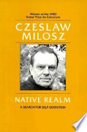
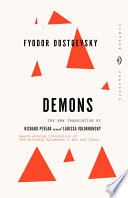
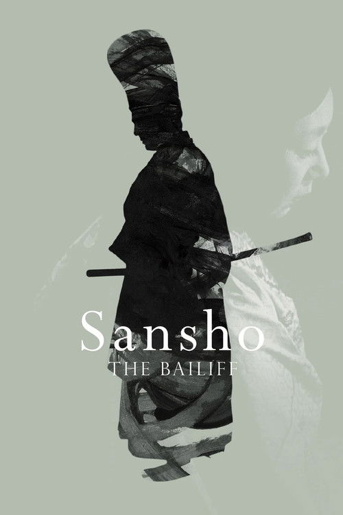
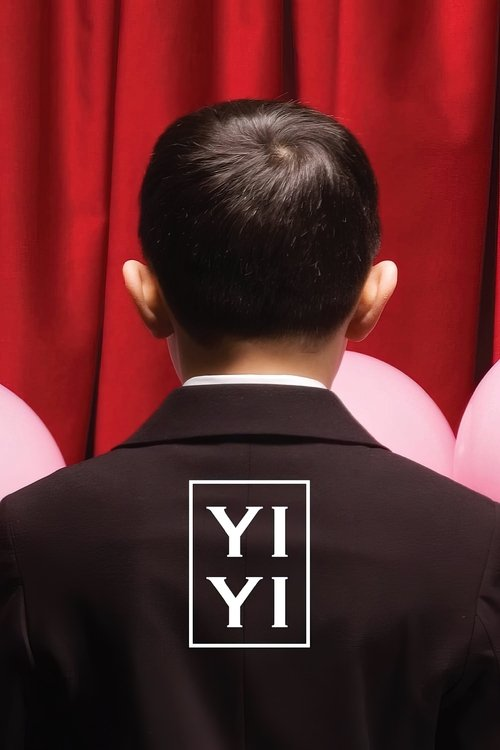
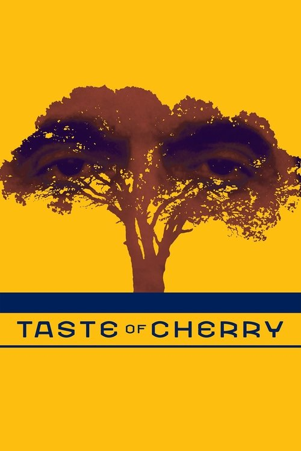

AI Recommendation
The Man Without Qualities
Why It Fits
If Proust and Dostoevsky had a third sibling. Set in the twilight of the Austro-Hungarian Empire, endlessly digressive and ironic.
AI-generated picks from your reading and viewing history
If Proust and Dostoevsky had a third sibling. Set in the twilight of the Austro-Hungarian Empire, endlessly digressive and ironic.

Miłosz's memoir — the natural follow-up to The Captive Mind. A life lived across pre-war Vilnius, Nazi occupation, and Communist Poland.

Dostoevsky's most politically prophetic novel — revolutionary nihilism in a provincial town. Pairs naturally with The Captive Mind, another favourite.

You've watched Ugetsu and Woman in the Dunes. Sansho is Mizoguchi's peak — a medieval family torn apart by feudal cruelty. One of the most devastating films ever made.

The Taiwanese equivalent of Kore-eda's family films you love. A three-hour portrait of a Taipei family. Often called one of the greatest films ever made.

You watched Close-Up. This is Kiarostami's Palme d'Or winner — a man drives through the hills outside Tehran looking for someone to bury him.